Tutorial 8 of 17
Waves in a flume
Make regular waves at one end of a flume, absorb them at the other, and measure them on the way.
A wave flume is a long, narrow tank with a wave maker at one end. Here it is 8 m long with water 0.4 m deep. The wave maker sends waves 0.04 m high every 1.5 seconds; the far end swallows them instead of sending them back; and two gauges record the water level as the waves pass.
The flume is modelled as a thin slice, one cell thick, which keeps the run short.
What you will learn
- fill a tank with still water to a level
- set up a wave maker: height, period and wave theory
- let waves leave without reflection
- measure the waves with gauges and compare with what you asked for
Computer time: a few seconds for the mesh and a few minutes for the run.
1Open the example
Start EasyFOAM. This case is one of the examples on the start page: it comes with every setting filled in, and this tutorial walks through each of them so that you understand the case and could build it yourself.
- Click Waves in a flume.

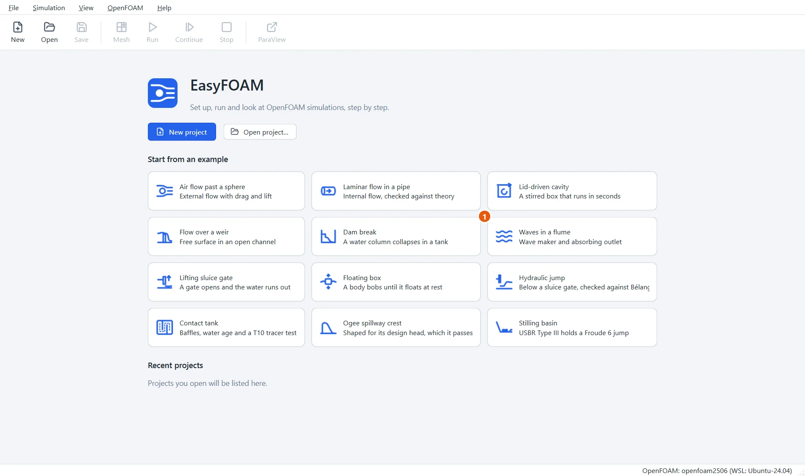
2Name the project
The project is an ordinary folder that EasyFOAM creates for you.
- Type a name, for example
waves. - Click Create project.

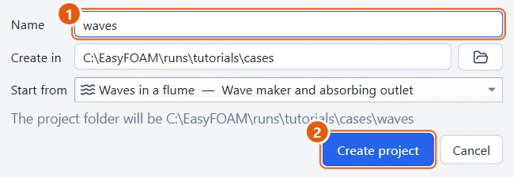
3The flume
There are no shapes: the flume is the base mesh itself, 8 m long, 0.8 m high and one 5 cm cell thick. The cells are 25 mm, so a 0.04 m wave is less than two cells high: enough to carry the wave, too few for fine detail.
- Corner (max):
8,0.05,0.8. - Cells:
320,1,32. inletwill be the wave maker,outletthe absorbing end.- Front and back are
empty: a two-dimensional case. - Click Mesh in the toolbar (or press F5).

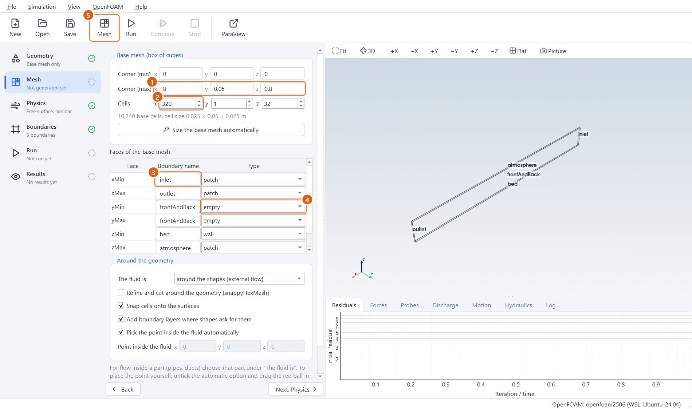
4Still water
The physics is free-surface flow without a turbulence model. The water starts at rest and fills the whole flume to 0.4 m, which is what Fill to a level produces: one box as long and wide as the mesh.
- One box of water, from
0, 0, 0to8, 0.05, 0.4: still water 0.4 m deep. - Gravity:
0,0,-9.81.

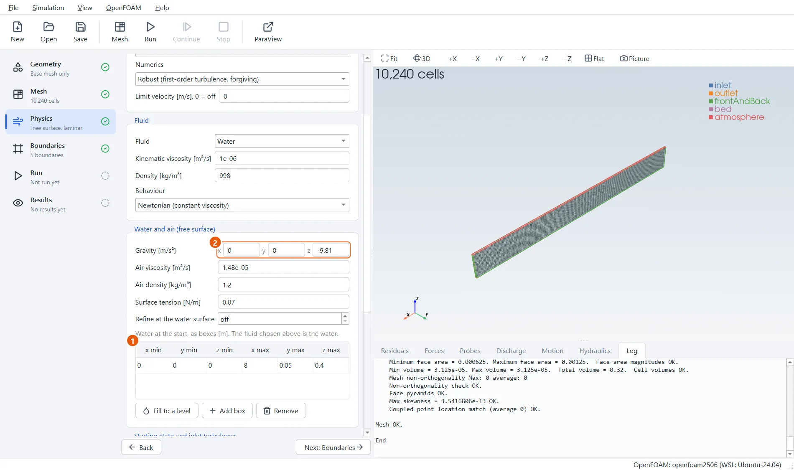
5The wave maker
The inlet becomes a wave maker. You describe the waves you want and choose a wave theory that suits them; for ordinary regular waves the second-order Stokes theory is the usual choice.
- Select inlet.
- Condition: Wave maker.
- Wave height:
0.04m, from trough to crest. - Wave period:
1.5s. - Wave theory: Stokes 2nd order.

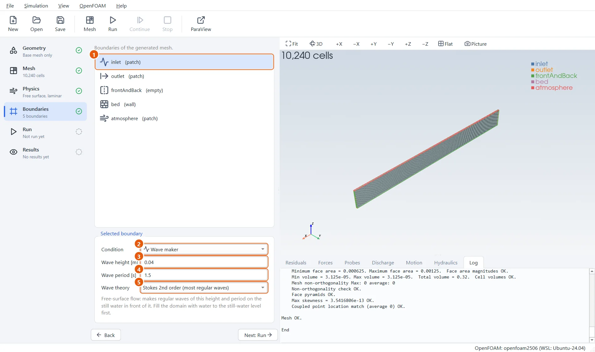
6The absorbing end
A plain wall at the far end would send every wave back and spoil the measurement. The Wave-absorbing outlet moves like a paddle to cancel the waves that reach it.
- Select outlet.
- Condition: Wave-absorbing outlet.

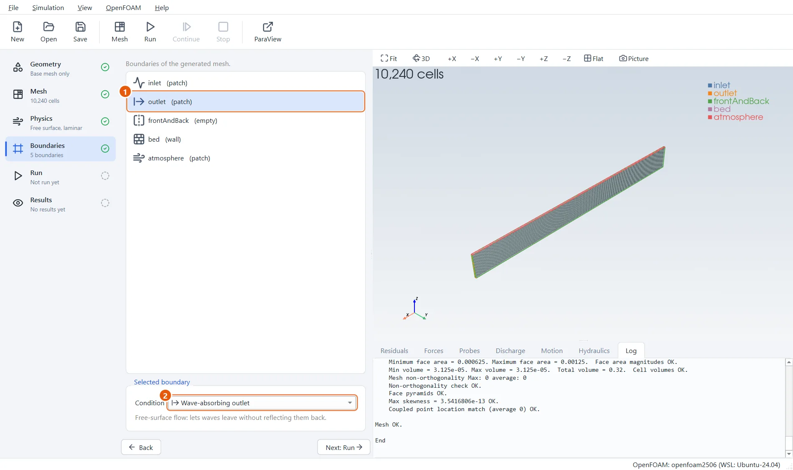
7Two gauges
In the Run step, scroll down to the probes. Two gauges record the water depth: one 2 m from the wave maker, one 6 m from it. Comparing them shows whether the waves keep their height on the way.
- Gauges at x =
2and x =6. Only x and y matter; the depth is measured along z.

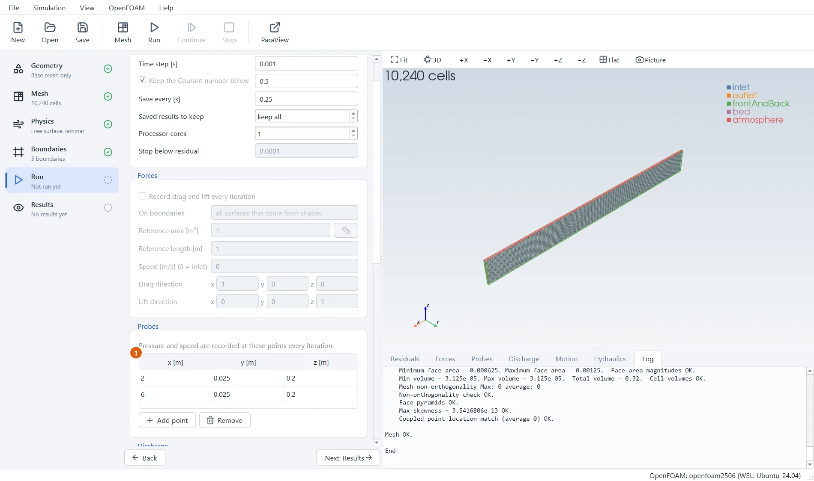
8Run for twelve seconds
Twelve seconds are eight wave periods: time for the first waves to cross the flume and for a regular pattern to form.
- End time:
12s. - Keep the Courant number below
0.5: waves need a smaller value than other free-surface flows. - Save every:
0.25s. - Click Run in the toolbar (or press F6).

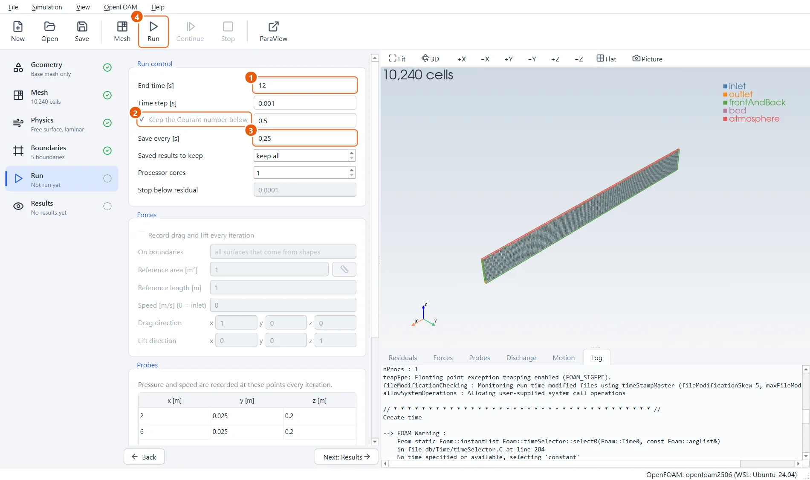
9The waves pass the gauges
Open the Probes tab during the run. The first gauge starts to move after about a second; the second one stays still until the waves have travelled the 6 m to it.
- Open the Probes tab: water depth at the two gauges.
- How far the run is.

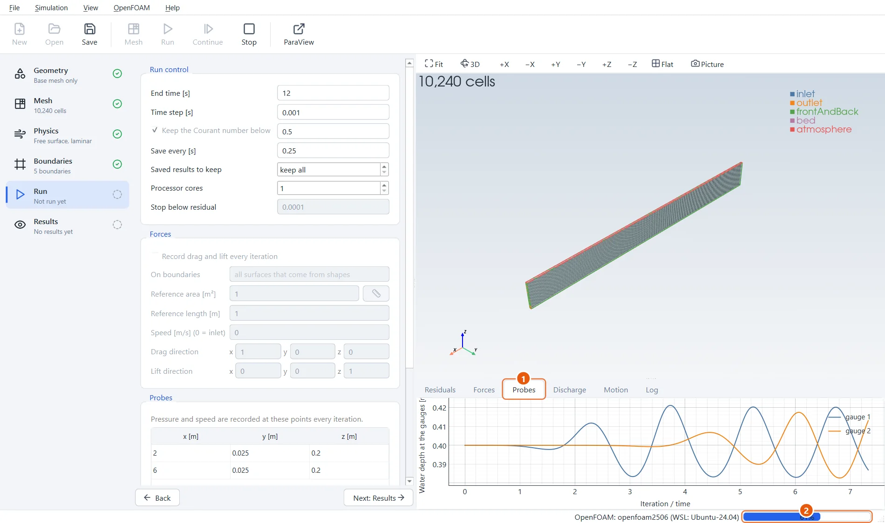
10Measure the waves
At the end, both gauges swing evenly around 0.4 m. Read the height from trough to crest off the plot: about 0.038 m at the first gauge and 0.037 m at the second, for the 0.04 m asked for. The small loss comes from the coarse mesh. The mean level stays at 0.4 m, which shows that no water piles up at the absorbing end.
- Zoom into the plot with the mouse wheel to read the crests and troughs.

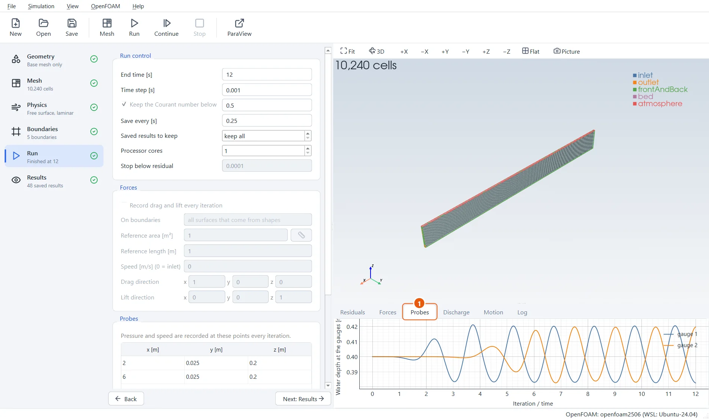
11The wave train
On a slice along the flume you can see the whole wave train at once. Because the flume is ten times longer than it is high and the waves are small, they look gentle: that is how they really are.
- Quantity:
alpha.water. - Slice plane: Normal to y.
- Step through Saved time to see the waves travel.

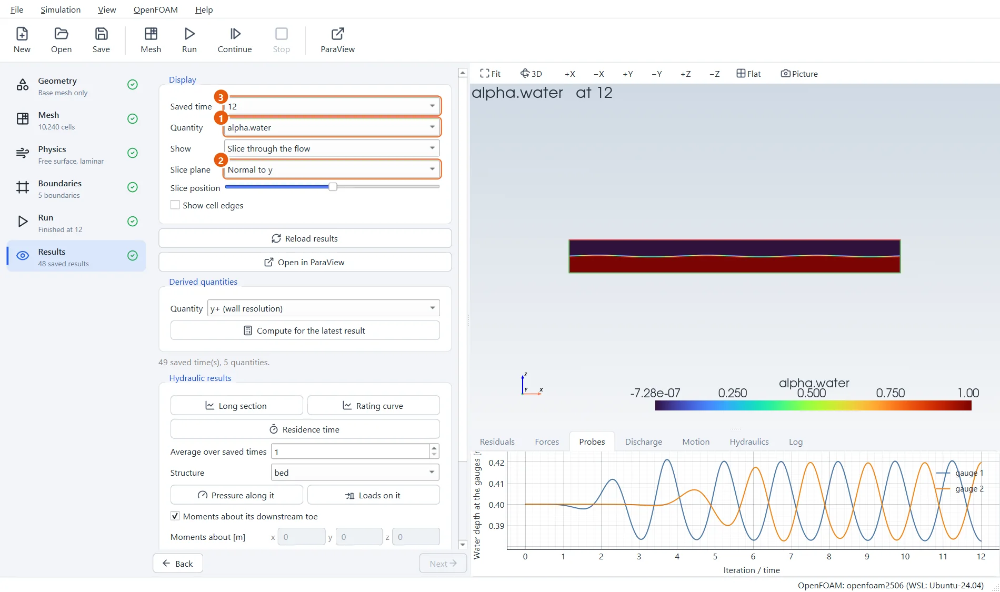
12Try it yourself
- Change the wave theory to Solitary wave and send a single crest down the flume.
- Halve the cell size (
640,1,64cells) and measure the wave height again. - Add a box in the Geometry step, standing on the bed in the middle of the flume, and watch the waves break over a submerged breakwater.